가스기사 (2008-05-11 기출문제)
1과목: 가스유체역학
1. 평판에서 발생하는 층류 경계층의 두께는 평판선단으로 부터의 거리 x와 어떤 관계가 있는가?
- x에 반비례한다.
- x1/2에 반비례한다.
- x1/2에 비례한다.
- x1/3에 비례한다.
(정답률: 62%)

2. 동점성계수 1cSt는 몇 m2/s인가?
- 10-3
- 10-4
- 10-5
- 10-6
(정답률: 50%)
3. 가역 단열과정에서 엔트로피의 변화 ΔS를 옳게 설명한 것은?
- ∞이다.
- 0보다 크고 1보다 작다.
- 1이다.
- 0이다.
(정답률: 50%)
4. 이상기체를 등온 압축할 때 체적 탄성계수를 옳게 나타낸 것은? (단, k는 비열비, P는 압력이다.)
- k
- 1/P
- kP2
- P
(정답률: 42%)
5. 다음 중 무차원수가 아닌 것은? (단, F는 힘, V는 선속도, |ΔP|는 압력차, ρ는 밀도, μ는 점도, D는 관의 내경, L은 길이, g는 중력가속도이다.)
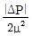
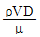
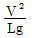
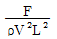
(정답률: 알수없음)
6. 다음 중 파스칼의 원리를 가장 바르게 설명한 것은?
- 밀폐 용기 내의 액체에 압력을 가하면 압력은 모든 부분에 동일하게 전달된다.
- 밀폐 용기 내의 액체에 압력을 가하면 압력은 가한 점에만 전달된다.
- 밀폐 용기 내의 액체에 압력을 가하면 압력은 그 반대편에만 전달된다.
- 밀폐 용기 내의 액체에 압력을 가하면 압력은 가한 점으로부터 일정한 간격을 두고 차등적으로 전달된다.
(정답률: 75%)
7. 직경이 4㎝인 파이프로 비중이 0.8인 기름을 314g/min의 유량으로 수송한다면 이 파이프 안에서의 기름의 평균속도는 약 몇 ㎝/min인가?
- 25.3
- 31.2
- 50.3
- 62.5
(정답률: 67%)
8. 역학적 점성계수(dynamic viscosity)의 단위로 옳은 것은?
- N·s2 /m
- kg/m·s2
- kg·s/m
- N·s/m2
(정답률: 47%)
9. 직경이 3㎜, 높이가 72㎝인 수은주에서 수은의 질량은 약 몇 kg인가? (단, 수은의 밀도는 13.6g/cm3이다.)
- 0.0692
- 1.8457
- 184.57
- 6920
(정답률: 46%)
10. 축동력을 L, 기계의 손실 동력을 Lm이라고 할 때 기계효율 ηm을 옳게 나타낸 것은?
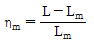
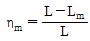
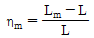
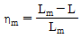
(정답률: 67%)
11. 아음속 등엔트로피 흐름의 축소-확대 노즐에서 확대되는 부분에서의 변화로 옳은 것은?
- 속도는 증가하고, 밀도는 감소한다.
- 압력 및 밀도는 감소한다.
- 속도 및 밀도는 증가한다.
- 압력은 증가하고, 속도는 감소한다.
(정답률: 79%)
12. 다음 중 펌프작용이 단속적이므로 맥동이 일어나기 쉬워 이를 완화하기 위하여 공기실을 필요로 하는 펌프는?
- 원심펌프
- 기어펌프
- 수격펌프
- 왕복펌프
(정답률: 62%)
13. 반지름 30㎝인 원통 속에 물을 담아 20rpm 으로 회전시킬 때 수면의 가장 높은 부분과 가장 낮은 부분의 높이 차는 약 몇 m인가?
- 0.002
- 0.02
- 0.2
- 2
(정답률: 39%)
14. 다음 중 맥동 현상의 발생원인으로 가장 거리가 먼 것은?
- 펌프의 유량 변동이 있을 때
- 배관 중에 수조나 공기조가 있을 때
- 유량조절 밸브가 수조나 공기조 뒤에 있을 때
- 안전판이 설치되어 있지 않을 때
(정답률: 19%)
15. 다음과 같은 일반적인 베르누이 방정식의 적용조건과 관련이 없는 것은?
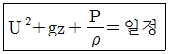
- 정상상태 흐름이다.
- 비점성 유체의 흐름이다.
- 압축성 유체의 흐름이다.
- 같은 유선 위에 있는 두 점에 적용된다.
(정답률: 84%)
16. 유적선에 대한 설명으로 가장 적합한 것은?
- 유체입자가 일정한 기간 동안 움직인 경로
- 임의의 순간에 모든 점의 속도가 동일한 유동선
- 에너지가 같은 점을 연결한 선
- 모든 유체 입자의 순간 궤적
(정답률: 58%)
17. 다음 그림은 동일한 물체 A, B, C를 물, 수은, 식용유속에 넣었을 때 떠 있는 모양을 나타낸 것이다. 부력은 어떻게 되는가?
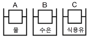
- A가 가장 크다.
- B가 가장 크다.
- C가 가장 크다.
- 모두 같다.
(정답률: 58%)
18. 일반적으로 다음의 장치에 발생하는 압력차가 작은 것부터 큰 순서대로 옳게 나열한 것은?
- 송풍기＜팬＜압축기
- 압축기＜팬＜송풍기
- 팬＜송풍기＜압축기
- 송풍기＜압축기＜팬
(정답률: 84%)
19. 내경 1.6㎝인 관에서의 레이놀즈수가 23000이었다. 관을 축소하여 내경을 0.4㎝로 했을 때 레이놀즈수는 얼마인가? (단, 유량의 변화는 없다.)
- 23000
- 46000
- 92000
- 115000
(정답률: 75%)
20. 다음 압축성 흐름 중 정체온도가 변할 수 있는 것은?
- 등엔트로피 팽창과정이다.
- 단면이 일정한 도관에서 단열 마찰흐름이다.
- 단면이 일정한 도관에서 등온 마찰흐름이다.
- 모든 과정에서 정체온도는 변하지 않는다.
(정답률: 29%)
2과목: 연소공학
21. 다음 [그림]에 해당하는 기관은?
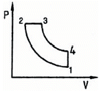
- 랭킨 사이클
- 오토 사이클
- 디젤 사이클
- 카르노 사이클
(정답률: 알수없음)
22. 다음 중 열역학 제2법칙에 대한 설명이 아닌 것은?
- 자발적인 과정이 일어날 때는 전체(계와 주위)의 엔트로피는 감소하지 않는다.
- 계의 엔트로피는 증가할 수도 있고 감소할 수도 있다.
- 계의 엔트로피는 계가 열을 흡수하거나 방출해야만 변화한다.
- 엔트로피는 열의 흐름을 수반한다.
(정답률: 58%)
23. 다음 공기비에 대한 설명 중 옳은 것은?
- 연료 1kg당 완전연소에 필요한 공기량에 대한 실제 혼합된 공기량의 비로 정의된다.
- 연료 1kg당 불완전연소에 필요한 공기량에 대한 실제 혼합된 공기량과 비로 정의된다.
- 기체 1m3당 실제로 혼합된 공기량에 대한 완전연소에 필요한 공기량의 비로 정의된다.
- 기체 1m3당 실제로 혼합된 공기량에 대한 불완전연소에 필요한 공기량의 비로 정의된다.
(정답률: 73%)
24. 0.5atm, 5L의 기체 A, 1atm, 10L의 기체 B와 0.6atm, 5L의 기체 C를 전체부피 20L의 용기에 넣었을 경우 전압은 약 몇 atm인가? (단, 기체 A, B, C는 이상기체로 가정한다.)
- 0.625
- 0.700
- 0.775
- 0.938
(정답률: 65%)
25. 프로판가스 1Nm3을 연소시켰을 때 건연소 가스량은 약 몇 Nm3인가? (단, 공기비는 1.1이다.)
- 22.2
- 24.2
- 26.2
- 28.2
(정답률: 40%)
26. 가스의 비열비(k=Cp/Cv))의 값은?
- 항상 1보다 크다.
- 항상 0보다 작다.
- 항상 0이다.
- 항상 1보다 작다.
(정답률: 92%)
27. 다음 2종류의 가스가 혼합 적재되어 있을 경우 폭발 위험성이 가장 큰 것은?
- 암모니아, 네온
- 질소, 프로판
- 염소, 아르곤
- 염소, 아세틸렌
(정답률: 77%)
28. 체적이 0.1m3인 용기 안에 메탄(CH4)과 공기 혼합물이 들어 있다. 공기는 메탄을 연소시키는데 필요한 이론 공기량보다 20%가 더 들어 있고 연소 전 용기의 압력은 300kPa이고, 온도는 90℃이다. 연소·전용기 안에 있는 메탄의 질량은 약 몇 kg인가? (단, 질소와 산소의 혼합비율은 79:21이다.)
- 0.0128
- 0.0438
- 0.0749
- 0.1⑤3
(정답률: 53%)
29. 공기비가 클 경우 연소에 미치는 현상으로 가장 거리가 먼 것은?
- 연소실 내의 연소온도가 내려간다.
- 연소가스 중에 CO2가 많아져 대기오염을 유발한다.
- 연소가스 중에 SO3가 많아져 저온 부식이 촉진된다.
- 통풍역이 강하여 배기가스에 의한 열손실이 많아진다.
(정답률: 47%)
30. 분자량이 30인 어느 가스의 정압비열이 0.75kJ/kg·K이라고 가정할 때 이 가스의 비열비(k)는 얼마인가?
- 0.277
- 0.473
- 1.586
- 2.380
(정답률: 50%)
31. 기체연료를 미리 공기와 혼합시켜 놓고, 점화해서 연소하는 것으로 연소실부하율을 높게 얻을 수 있는 연소방식은?
- 확산연소
- 예혼합연소
- 증발연소
- 분해연소
(정답률: 70%)
32. 다음의 연소 반응식 중 틀린 것은?
- C3H8＋5O2 → 3CO2＋4H2O
- C3H6＋(7/2)O2 → 3CO2＋3H2O
- C4H10＋(13/2)O2 → 4CO2＋5H2O
- C6H6＋(15/2)O2 → 6CO2＋3H2O
(정답률: 64%)
33. 발생로 가스의 가스분석 결과 CO2 3.2%, CO 26.2%, CH4 4%, H2 12.8%, N2 53.8% 이었다. 또한 가스 1Nm3중에 수분이 50g이 포함되어 있다면 이 발생로 가스 1Nm3을 완전연소 시키는데 필요한 공기량은 약 몇 Nm3인가?
- 1.023
- 1.228
- 1.324
- 1.423
(정답률: 알수없음)
34. 열기관 사이클 중 랭킨 사이클에 대한 설명으로 옳은 것은?
- 정적 사이클이다.
- 냉동 사이클이다.
- 내연기관 사이클이다.
- 증기기관 사이클이다.
(정답률: 알수없음)
35. 10kg 중유의 고위발열량이 40000kcal일 때 저위 발열량은 약 몇 kcal/kg인가? (단, C : 30%, H : 10%, 수분 : 2%이다.)
- 848
- 1048
- 2248
- 3448
(정답률: 39%)
36. 227℃와 27℃ 사이에서 운전되는 카르노(Carnot) 기관의 효율은 몇 %인가?
- 10
- 20
- 30
- 40
(정답률: 64%)
37. 가스화재에서 가스밸브를 잠궈 가스공급을 차단하는 방법은 다음 중 어떤 효과를 이용한 소화 방법인가?
- 제거소화효과
- 질식소화효과
- 냉각소화효과
- 희석소화효과
(정답률: 77%)
38. 불꽃점화기관에서 발생하는 knocking 현상을 방지하는 방법이 아닌 것은?
- 화염속도를 크게 한다.
- 말단가스의 온도를 내린다.
- 불꽃진행거리를 길게 해 준다.
- 혼합기의 자기착화온도를 높인다.
(정답률: 40%)
39. 다음 중 표면연소에 대하여 가장 옳게 설명한 것은?
- 오일이 표면에서 연소하는 상태
- 고체 연료가 화염을 길게 내면서 연소하는 상태
- 화염의 외부 표면에 산소가 접촉하여 연소하는 현상
- 적열된 코크스 또는 숯의 표면에 산소가 접촉하여 연소하는 상태
(정답률: 69%)
40. 다음 [보기]에서 비등액체 증기폭발(BLEVE) 발생의 단계를 순서에 맞게 나열한 것은?
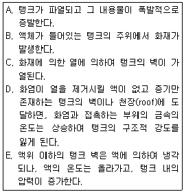
- E - D - C - A - B
- E - D - C - B - A
- B - C - E - D - A
- B - C - D - E - A
(정답률: 80%)
3과목: 가스설비
41. 접촉분해 공정으로 도시가스를 제조하는 공정에서 발열 반응을 일으키는 온도로서 가장 적당한 것은? (단, 반응압력은 10기압이다.)
- 350℃ 이하
- 500℃ 이하
- 750℃ 이하
- 850℃ 이하
(정답률: 65%)
42. CNG 충전소에서 천연가스가 공급되지 않는 지역에 차량을 이용하여 충전설비에 충전하는 방법을 의미하는 것은?
- Combination Fill
- Fast/Quick Fill
- Mother/Daughter Fill
- Slow/Time Fill
(정답률: 67%)
43. 공기액화분리장치에서의 폭발원인에 해당되지 않는 것은?
- 액체공기 중의 질소 혼입
- 액체공기 중의 오존 혼입
- 공기 취입구로부터의 아세틸렌혼입
- 압축기용 윤활유의 분해에 따른 탄화수소의 생성
(정답률: 62%)
44. LPG 자동차에 설치되어 있는 베이퍼라이져(Vaporizer)의 주요 기능은?
- 압력승압 - 가스 기화
- 압력강압 - 가스 기화
- 공기, 연료 혼합 - 타르 배출
- 공기, 연료 혼합 - 가스 차단
(정답률: 77%)
45. 도시가스 공장에 내용적 20m3의 저장탱크가 2개 설치 되어 있다. 총 저장 능력은 몇 톤(ton)인가? (단, 비중은 0.71이다.)
- 15.75
- 20.36
- 25.56
- 35.75
(정답률: 65%)
46. 터보압축기의 진동발생 주요 원인으로서 가장 거리가 먼 것은?
- 부식이나 마모에 의한 것
- 불안정 상태에서 운전하는 경우
- 설치 또는 센터링 불량에 의한 것
- 래비린스와 회전체의 접촉에 의한 것
(정답률: 24%)
47. 다음 중 도시가스 지하매설 배관으로 사용되는 배관은?
- 폴리에틸렌 피복강판
- 압력배관용 탄소강판
- 연료가스 배관용 탄소강관
- 배관용 아크용접 탄소강관
(정답률: 79%)
48. 송출 유량(Q)이 0.3m3/min, 양정(H)이 16m, 비교회전도(Ns)가 110일 때 펌프의 회전속도(N)는 약 몇 rpm인가?
- 1507
- 1607
- 1707
- 1807
(정답률: 50%)
49. 다음 중 캐비테이션의 발생조건이 아닌 것은?
- 관경이 작은 경우
- 관속의 유량이 증가한 경우
- 관내의 온도가 증가하였을 경우
- 펌프의 위치가 흡입액면보다 너무 낮게 설치된 경우
(정답률: 54%)
50. 원통형 또는 다각형의 외통과 그 내벽을 상하로 미끄러져 움직이는 편판상의 피스톤 및 바닥판, 지붕판으로 구성된 가스홀더(Holder)는?
- 고압식 가스홀더
- 무수식 가스홀더
- 유수식 가스홀더
- 구형가스홀더
(정답률: 48%)
51. 도시가스 원료 중에 함유되어 있는 황을 제거하기 위한 건식탈황법의 탈황제로서 일반적으로 사용되고 있는 것은?
- 탄산나트륨
- 산화철
- 암모니아 수용액
- 염화암모늄
(정답률: 67%)
52. LNG 기화기 중 해수를 가열원으로 이용하므로 해수를 용이하게 입수할 수 있는 입지조건을 필요로 하는 기화기는?
- 써브머지드 기화기
- 오픈 랙 기화기
- 전기가열식 기화기
- 온수가열식 기화기
(정답률: 79%)
53. 공기 액화 사이클 중 비점이 점차 낮은 냉매를 사용하여 저 비점의 기체를 액화하는 사이클은?
- 린데(linde)의 액화사이클
- 캐피자(kapitza)의 액화사이클
- 클라우드(claude)의 액화사이클
- 캐스케이드(cascade)의 액화사이클
(정답률: 67%)
54. 액화석유가스를 이송하는 방법에는 압축기를 사용하는 경우와 액송펌프를 사용하는 경우가 있다. 액송펌프를 사용하는 경우의 단점이 아닌 것은?
- 충전 시간이 길다.
- 베이퍼록 등의 이상이 있다.
- 저온에서 부탄이 재액화될 수 있다.
- 탱크로리 내의 잔가스 회수가 불가능하다.
(정답률: 알수없음)
55. 흡입밸브 압력이 0.8MPa·G인 3단 압축기의 최종단의 토출압력은 약 몇 MPa·G인가? (단, 압축비는 3이며, 1MPa은 10kg/cm2로 한다.)
- 16.1
- 21.6
- 24.2
- 28.7
(정답률: 50%)
56. LPG 공급방식에서 강제기화방식의 특징이 아닌 것은?
- 기화량을 가감할 수 있다.
- 설치 면적이 작아도 된다.
- 한냉 시에는 연속적인 가스공급이 어렵다.
- 공급 가스의 조성을 일정하게 유지할 수 있다.
(정답률: 67%)
57. 수소 60v%, 암모니아 20v%, 에틸렌 20v%인 혼합가스의 폭발하한계는 약 몇 %인가? (단, 폭발하한계는 수소 4v%, 암모니아 15v%, 에틸렌 3.1v%이다.)
- 3.5
- 4.1
- 4.4
- 4.9
(정답률: 40%)
58. 정압기에서 유량특성은 메인벨브의 열림과 유량과의 관계를 말한다. 다음 중 유량특성의 종류가 아닌 것은?
- 직선형
- 2차형
- 3차형
- 평방근형
(정답률: 43%)
59. 고압장치에 사용되는 밸브의 특징에 대한 설명 중 틀린 것은?
- 단조품보다 주조품을 깎아서 만든다.
- 기밀유지를 위해 스핀들에 패킹이 사용된다.
- 밸브 시트는 교체할 수 있도록 되어 있는 것이 대부분이다.
- 밸브 시트는 내식성과 강도가 높은 재료를 많이 사용한다.
(정답률: 50%)
60. 다음 중 고압가스용 밸브에 대한 설명 중 틀린 것은?
- 가연성 가스인 브롬화메탄과 암모니아 용기밸브의 충전구는 오른나사이다.
- 암모니아 용기밸브는 동 및 동합금의 재료를 사용한다.
- 용기에는 용기 내 압력이 규정압력 이상으로 될 때 작동하는 안전밸브가 부착되어 있다.
- 고압밸브는 그 용도에 따라 스톱밸브, 강압밸브, 안전밸브, 체크밸브 등으로 구분된다.
(정답률: 79%)
4과목: 가스안전관리
61. 자동차에 고정된 탱크로 소형저장탱크에 액화석유가스를 충전할 때의 기준으로 틀린 것은?
- 소형저장탱크의 검사여부를 확인하고 공급할 것
- 소형저장탱크 내의 잔량을 확인한 후 충전할 것
- 충전작업은 수요자가 채용한 경험이 많은 사람의 입회하에 할 것
- 작업 중의 위해방지를 위한 조치를 할 것
(정답률: 84%)
62. 고압가스 일반제조시설의 저장탱크 및 처리설비를 실내에 설치하는 경우의 기준으로 옳은 것은?
- 저장탱크실과 처리설비시설은 각각 구분하여 설치하고 구분하지 않을 경우는 강제통풍구조로 하여야 한다.
- 저장탱크실과 처리설비시설은 천장, 벽, 바닥의 두께는 20㎝ 이상이 되도록 한다.
- 가연성가스 또는 독성가스의 저장탱크와 처리시설에는 가스누출 자동차단장치를 설치하여야 한다.
- 저장탱크의 정상부와 저장탱크실의 천장과의 거리는 60㎝ 이상으로 한다.
(정답률: 44%)
63. 충전용기 등을 차량에 적재하여 운행할 때 운반책 임자를 동승하는 차량의 운행에 있어서 현저하게 우회하는 도로란 이동거리가 몇 배 이상인 경우를 말하는가?
- 1
- 1.5
- 2
- 2.5
(정답률: 67%)
64. 다음 고압가스 일반제조의 시설기준 중 역류방지 밸브를 반드시 설치하지 않아도 되는 곳은?
- 아세틸렌의 고압건조기와 충전용 교체 밸브사이의 배관
- 아세틸렌을 압축하는 압축기의 유분리기와 고압건조기와의 사이
- 가연성가스를 압축하는 압축기와 충전용 주관사이
- 암모니아 또는 메탄올의 합성탑 및 정제탑과 압축기와의 사이의 배관
(정답률: 39%)
65. 다음 중 용접용기의 신규검사항목이 아닌 것은? (단, 용기는 강재로 제조한 것이다.)
- 인장시험
- 압궤시험
- 기밀시험
- 파열시험
(정답률: 36%)
66. 다음 중 용기에 각인되는 기호와 그 기호가 의미하는 내용을 옳게 나타낸 것은?
- TP : 기밀시험압력
- V : 용기의 합격표시
- FP : 압축가스를 충전하는 용기는 최고충전압력
- TW : 밸브 및 부속품을 포함하지 아니한 용기의 질량
(정답률: 58%)
67. 지상에 설치하는 액화석유가스의 저장탱크 안전밸브에 가스방출관을 설치하고자 한다. 저장탱크의 정상부가 8m일 경우 방출관의 높이는 지상에서 몇 m 이상 높이이어야 하는가?
- 2
- 5
- 7
- 10
(정답률: 50%)
68. 1몰의 Cl2 가스를 0℃에서 2L 용기에 넣었을 때의 압력을 van der Waals 식에 의하여 구하면 약 몇 atm인가? (단, a는 6.49atm·L2/mol2, b는 0.⑤62L/mol이다.)
- 8.2
- 9.9
- 11.2
- 12.5
(정답률: 25%)
69. 비점 -161℃에서의 기체 CH4은 20℃ 공기보다 약 몇 배 더 무거운가? (단, 20℃에서 기체 CH4의 밀도는 0.667g/L, 같은 온도에 있어서 건조공기의 밀도는 1.23g/L로 한다.)
- 1.2
- 1.4
- 1.6
- 1.8
(정답률: 40%)
70. 차량에 고정된 저장탱크에 고압가스를 운반할 경우 안전사항으로 옳지 않은 것은?
- 저장탱크는 그 온도를 항상 40℃ 이하로 유지하여야 한다.
- 액화 가연성가스의 저장탱크에는 유리제품의 액면계를 부착한다.
- 저장탱크에 설치된 밸브 및 콕크에는 개폐상태를 외부에서 쉽게 확인할 수 있는 표시를 해야 한다.
- 액화가스 충전저장탱크에는 액면요동 방지용 방파판을 설치한다.
(정답률: 69%)
71. 도시가스 배관을 지하에 매설할 때 배관에 작용하는 하중을 수직방향 및 횡방향에서 지지하고 하중을 기초 아래로 분산시키기 위한 침상재료는 배관 하단에서 배관 상단 몇 ㎝까지 포설하여야 하는가?
- 10
- 20
- 30
- 50
(정답률: 65%)
72. 일반고압가스의 시설 및 제조기술상 안전관리 측면에서 정한 기준으로 틀린 것은?
- 가연성가스는 저장탱크의 출구에서 1일 1회 이상 채취하여 분석하여야 한다.
- 1시간의 공기압축량이 1천m3을 초과하는 공기액화분리기 내에 설치된 액화산소통 내의 액화산소는 1일 1회 이상 분석하여야 한다.
- 저장탱크는 가스가 누출되지 아니하는 구조로 하고 50m3 이상의 가스를 저장하는 곳에는 가스방출장치를 설치하여야 한다.
- 산소 등의 충전에 있어 밀폐형의 물전해조에는 액면계와 자동 급수장치를 하여야 한다.
(정답률: 29%)
73. 다음 특정설비 중 재검사 대상에 해당하는 것은?
- 평저형 저온저장탱크
- 초저온용 대기식 기화장치
- 저장탱크에 부착된 안전밸브
- 특정고압가스용 실린더캐비넷
(정답률: 64%)
74. 정전기의 발생에 영향을 주는 요인에 대한 설명으로 옳지 않은 것은?
- 물질의 표면상태가 원활하면 발생이 적어진다.
- 물질표면이 기름 등에 의해 오염되었을 때는 산화, 부식에 의해 정전기가 크게 발생한다.
- 정전기의 발생은 처음 접촉, 분리가 일어났을 때 최대가 된다.
- 분리속도가 빠를수록 정전기의 발생량은 적어진다.
(정답률: 93%)
75. 제조설비에 설치하는 가스누출 검지 경보장치의 설치기준에 대한 설명 중 틀린 것은?
- 독성가스의 충전용 접속구 군의 주위에 2개 이상 설치
- 특수반응설비는 그 바닥면 둘레 10m에 대하여 1개 이상의 비율로 설치
- 방류둑 내에 설치된 저장탱크의 경우에는 당해 저장탱크마다 1개 이상 설치
- 건축물 내에 설치된 압축기, 펌프, 반응설비, 저장탱크 등이 설치되어 있는 장소 주위에는 바닥면 둘레 10m에 대하여 1개 이상의 비율로 설치
(정답률: 40%)
76. 피뢰설비를 설치하지 않은 가연성가스 제조설비에 정전기를 제거하는 조치로 접지를 실시할 경우 접지저항치의 총 합이 몇 Ω 이하이어야 하는가?
- 10
- 50
- 100
- 200
(정답률: 67%)
77. 고압가스를 제조하는 경우 다음 가스 중 압축해서는 안 되는 것은?
- 수소 중 산소용량이 전용량의 2%인 것
- 산소 중 프로판가스용량이 전용량의 2%인 것
- 수소 중 프로판가스용량이 전용량의 2%인 것
- 프로판가스 중 산소용량이 전용량의 2%인 것
(정답률: 54%)
78. 액화석유가스 사용시설에 설치되는 조정압력 3.3kPa 이하인 조정기의 안전장치의 작동정지압력 기준은?
- 7kPa
- 5.6kPa ~ 8.4kPa
- 5.04kPa ~ 8.4kPa
- 9.9kPa
(정답률: 59%)
79. LPG 50kg 을 기화시켰을 때 용적으로 약 몇 m3이 되는가? (단, 프로판 가스의 비중은 공기를 1로 할 때 1.5 이며, 온도 20℃, 1기압이다.)
- 25.5
- 27.8
- 35.8
- 50.6
(정답률: 62%)
80. 다음 중 정량적 안전성 평가기법에 해당하는 것은?
- 작업자 실수분석(HEA)기법
- 체크리스트(Checklist)기법
- 위험과 운전분석(HAZOP)기법
- 사고예상질문분석(WHAT-IF)기법
(정답률: 43%)
5과목: 가스계측기기
81. 반도체식 가스누출 검지기의 특징에 대한 설명으로 옳은 것은?
- 안정성은 떨어지지만 수명이 길다.
- 가연성가스 이외의 가스는 검지할 수 없다.
- 응답속도를 빠르게 하기 위해 가열해 준다.
- 미량가스에 대한 출력이 작으므로 감도는 좋지 않다.
(정답률: 59%)
82. 마이크로파식 레벨측정기의 특징에 대한 설명 중 틀린 것은?
- 초음파식보다 정도(精度)가 낮다.
- 진공용기에서의 측정이 가능하다.
- 측정면에 비접촉으로 측정할 수 있다.
- 고온, 고압의 환경에서도 사용이 가능하다.
(정답률: 56%)
83. 가스미터의 용어에 대한 설명으로 옳은 것은?
- 공차는 검정공차와 사용공차가 있다.
- 사용공차의 허용치는 ±10% 범위이다.
- 기기오차는 시험용미터와 기준미터의 차로 나타낸다.
- 감도유량은 가스미터가 작동하는 최대유량을 뜻한다.
(정답률: 53%)
84. 구리-콘스탄탄 열전대의 (-)극에 주로 사용되는 금속은?
- Ni-Al
- Cu-Ni
- Mn-Si
- Ni-Pt
(정답률: 71%)
85. 다음 루트 가스미터에 대한 설명 중 틀린 것은?
- 설치장소가 작아도 된다.
- 대유량가스 측정에 적합하다.
- 중압가스의 계량이 가능하다.
- 계량이 정확하여 기준기로 사용된다.
(정답률: 48%)
86. 다음 침종식 압력계에 대한 설명 중 틀린 것은?
- 진동, 충격의 영향을 적게 받는다.
- 아르키메데스의 원리를 이용한 계기이다.
- 복종식의 측정범위는 5 ~ 30mmH2O 정도이다.
- 압력이 높은 기체의 압력을 측정하는데 쓰인다.
(정답률: 37%)
87. 다음 압력계 중 측정방법이다. 다른 것은?
- 부르돈관형
- 멤브레인형
- 정전용량형
- 벨로우즈형
(정답률: 50%)
88. 다음 중 연소 분석법이 아닌 것은?
- 완만 연소법
- 분별 연소법
- 혼합 연소법
- 폭발법
(정답률: 28%)
89. 막식가스미터에서 크랭크축이 녹슬거나 밸브와 밸브시트가 타르나 수분 등에 의해 접착 또는 고착되어 있어나는 고장의 형태는?
- 부동
- 기어불량
- 떨림
- 불통
(정답률: 60%)
90. 어떤 비례제어기가 80℃에서 100℃ 사이에 온도를 조절 하는데 사용되고 있다. 이 제어기에서 측정된 온도가 81℃ 에서 89℃로 될 때 비례대(proportional band)는 얼마인가?
- 10%
- 20%
- 30%
- 40%
(정답률: 43%)
91. 수은을 넣은 차압계를 이용한 액면계에서 수은의 높이가 40㎜라면 상부의 압력취출구에서 탱크 내 액면까지의 높이는 약 몇 ㎜인가? (단, 액의 비중량 998kgf/m3, 수은의 비중 13.55이다.)
- 5.4
- 54
- 50.3
- 503
(정답률: 8%)
92. 다음 [그림]은 어떤 가스미터인가?
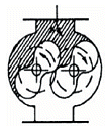
- 건식 가스미터
- 습식 가스미터
- 루트 가스미터
- 오리피스미터
(정답률: 77%)
93. 회전수가 비교적 늦기 때문에 100m3/h 이하의 소용량에 적합하고, 도시가스를 저압으로 사용하는 일반가정에서 주로 사용하는 가스계량기의 형식은?
- 막식
- 회전자식
- 습식
- 추량식
(정답률: 78%)
94. 1차 제어장치가 제어량을 측정하고 2차 조절계의 목표값을 설정하는 것으로서 외란의 영향이나 낭비시간 지연이 큰 프로세서에 적용되는 제어방식은?
- 캐스케이드 제어
- 정치제어
- 추치제어
- 비율제어
(정답률: 74%)
95. 다음 온도계측기 중 비접촉식으로만 짜지어진 것은?
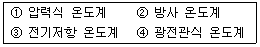
- ①, ③
- ②, ④
- ①, ②
- ③, ④
(정답률: 77%)
96. 시료 가스 중의 각각의 성분을 규정된 흡수액에 의해 순차적이고 선택적으로 흡수시켜, 그 가스 부피의 감소량으로부터 성분을 정량한다. 흡수액에 흡수되지 않는 성분은 산소와 함께 연소시켜, 그 때 가스 부피의 감소량 및 이산화탄소의 생성량으로부터 계산에 의해 정량하는 가스분석 방법은?
- 오르자트(Orsat)법
- 헴펠(Hempel)법
- 게겔(Gockel)법
- 적정(滴定)법
(정답률: 46%)
97. 일종의 폐관식 수은 마노미터로다. 진공계의 교정용으로 사용되며 측정범위가 1×10-2Pa 정도인 진공계는?
- 맥로우드 진공계
- 피라니 진공계
- 전리 진공계
- 환상식 진공계
(정답률: 40%)
98. 어떤 관의 길이 25㎝에서 벤젠을 가스크로마토그램으로부터 계산한 이론단수가 400단 이었다. 기록지에 머무른 부피가 30㎜라면 봉우리의 폭(띠나비)은 몇 ㎜인가?
- 3
- 6
- 9
- 12
(정답률: 56%)
99. 다음 중 설치가 쉽고 고압에 적당하나 압력손실이 큰 유량계는?
- 피토관
- 로터미터
- 벤튜리유량계
- 오리피스유량계
(정답률: 70%)
100. 다음 중 프로세스 제어량이 아닌 것은?
- 온도
- 유량
- 밀도
- 액면
(정답률: 59%)